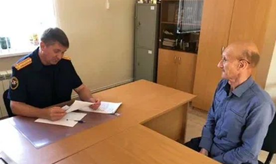

Понятие субъекта преступления
ЦИТАТА
Субъект преступления, согласно ст. 19 УК РФ, это вменяемое физическое лицо, достигшее возраста уголовной ответственности.
В этом определении содержатся три ключевых признака субъекта:
1) Привлечение к уголовной ответственности возможно только в случае, когда вред общественным отношениям причинен физическим лицом, юридические лица по российскому уголовному праву не могут быть субъектом преступления. Субъектом преступления могут быть граждане Российской Федерации, иностранные граждане, лица без гражданства. В случае, если хозяин собаки умышленно натравляет ее на человека, субъектом преступления будет не собака, покусавшая потерпевшего, а ее хозяин, собака же будет считаться орудием преступления.
2) Достижение возраста уголовной ответственности. Согласно ст. 20 УК РФ, уголовной ответственности подлежит лицо, достигшее ко времени совершения преступления 16-летнего возраста. Считается, что к 16 годам человек, как правило, полностью способен понимать общественную значимость своего поведения и нести за него ответственность.
Помимо общего возраста уголовной ответственности, законом предусмотрен специальный возраст.
Он может быть пониженным – 14 лет, с этого возраста наступает ответственность за преступления, суть которых должна быть ясна лицу с детства (их полный перечень дан в ч. 2 ст. 20 УК РФ) – убийство, изнасилование, терроризм, кража, угон транспортного средства и др. специальный возраст также может быть повышенным – 18 лет, с этого возраста наступает ответственность за некоторые деяния, например, за вовлечение несовершеннолетнего в совершение преступления (ч. 1 ст. 150 УК). Кроме того, специальный возраст может быть явно не обозначен в статье УК РФ, но вытекать из ее смысла: так, преступления против военной службы наказуемы только в отношении совершеннолетних лиц, т.к. военная служба возможна не ранее 18 лет.
Особо стоит отметить следующее исключение: если несовершеннолетний достиг возраста уголовной ответственности, но вследствие отставания в психическом развитии, не связанном с психическим расстройством, во время совершения общественно опасного деяния не мог в полной мере осознавать фактический характер и общественную опасность своих действий (бездействия) либо руководить ими, он не подлежит уголовной ответственности. При этом лицо считается вменяемым, ответственность же снимается ввиду определенных аномалий в психике, не связанных с расстройством интеллекта и воли: такое лицо могло не осознавать, что совершает противоправные действия, не могло в полной мере руководить своими действиями.
Если установить возраст не представляется возможным (например, отсутствие свидетельства о рождении, паспорта), то необходимо назначить экспертизу. При этом лицо считается достигшим возраста уголовной ответственности не в день рождения, а после ноля часов, т.е. на следующий день. Например, лицу, совершившему убийство 10 октября, в этот день исполнилось 14 лет. В данном случае оно не может быть привлечен к уголовной ответственности;
3) Вменяемость лица – минимальный уровень развития интеллекта и воли, которого достаточно, чтобы лицо было способно осознать характер совершаемого деяния и руководить им.
Вменяемость, как и вина, связана с интеллектуальной и волевой сферами деятельности субъекта. Но если вина — это психическое отношение к содеянному, то вменяемость — это психическое состояние лица на момент совершения преступления. Вина — это определенная психическая деятельность, деятельность интеллекта и воли по осознанию деяний, предвидению последствий, руководству деянием и достижением общественно опасных последствий. А вменяемость — это необходимая предпосылка такой деятельности. Поэтому только вменяемое лицо может быть признано виновным.
В УК РФ дано определение невменяемости (ч. 1 ст. 21 УК): «Не подлежит уголовной ответственности лицо, которое во время совершения общественно опасного деяния находилось в состоянии невменяемости, то есть не могло осознавать фактический характер и общественную опасность своих действий (бездействия) либо руководить ими вследствие хронического психического расстройства, временного психического расстройства, слабоумия либо иного болезненного состояния психики». Следовательно, при невменяемости речь идет о полной неспособности интеллекта осознавать содеянное и полной неспособности воли руководить своими действиями в момент совершения общественно опасного деяния.
Невменяемость определяется двумя критериями:
а) биологическим (медицинским). Его создают хронические и временные психические заболевания и расстройства (эпилепсия, шизофрения, сифилис мозга, прогрессивный паралич и др.), слабоумие, иные болезненные состояния психики. Хроническое психическое расстройство характеризуется длительностью, труднолечимостью заболевания. Временное же психическое расстройство носит кратковременный характер, начинается внезапно и, как правило, заканчивается полным выздоровлением (неврозы, реактивные психозы, белая горячка и др.). Слабоумие (олигофрения) — это поражение интеллекта, сопровождающееся необратимыми изменениями личности – идиотией, имбецильностью или дебильностью. Иное болезненное состояние психики — это заболевания психики (кроме перечисленных выше форм), расстройства психической деятельности, порожденные различными заболеваниями;
б) психологическим (юридическим). Он складывается из двух признаков – интеллектуального и волевого. Интеллектуальный признак состоит в неспособности лица осознавать фактический характер и общественную опасность своих действий (бездействия). Например, лицо, страдающее слабоумием, может не осознавать, что, нанося потерпевшему удары, способно вызвать его смерть. Волевой признак психологического критерия состоит в неспособности лица руководить своими действиями в момент их совершения. Так, клептоман или пироманьяк может осознавать, что совершает преступление, но не способен удержаться от противоправных действий.
Для признания лица невменяемым достаточно установить либо интеллектуальный, либо волевой моменты.
В отношении такого лица вместо уголовной ответственности судом могут быть назначены принудительные меры медицинского характера – принудительное лечение. В случае успешного излечения лицо нельзя привлечь к уголовной ответственности, т.к. на момент его совершения оно было невменяемым.
Отдельно УК РФ упоминает ответственность лиц с психическим расстройством, не исключающим вменяемости. Статья 22 УК устанавливает, что вменяемое лицо, которое во время совершения преступления в силу психического расстройства не могло в полной мере осознавать фактический характер и общественную опасность своих действий (бездействия) либо руководить ими, подлежит уголовной ответственности. Психическое расстройство, не исключающее вменяемости, учитывается судом при назначении наказания как смягчающее обстоятельство и может служить основанием для назначения принудительных мер медицинского характера. Состояние опьянения не квалифицируется как кратковременное психическое расстройство.
Перечисленные три ключевых признака являются обязательными, помимо них выделяют факультативный признак – специальный субъект преступления, который может быть предусмотрен конкретной статьей УК РФ. Например, необходимым условием привлечения к уголовной ответственности за получение взятки является нахождение виновного на государственной службе.
Специальный субъект преступления
Уголовный кодекс РФ почти в 40% составов предусматривает специального субъекта, признаки которого могут относиться к различным характеристикам виновного. С учетом их особенностей осуществляется классификация признаков специального субъекта:
а) гражданство — субъектом государственной измены может быть только гражданин РФ (ст. 275 УК), субъектом шпионажа (ст. 276 УК) — только иностранный гражданин или лицо без гражданства;
б) возраст — субъектом вовлечения несовершеннолетнего в преступление (ст.150 УК) или в совершение антиобщественных действий (ст. 151 УК) является совершеннолетнее лицо;
в) пол — непосредственным исполнителем изнасилования может быть только мужчина (ст. 131 УК), при убийстве матерью новорожденного ребенка (ст. 106 УК) субъектом является женщина — мать новорожденного;
г) должностное положение — субъектом принуждения к даче показаний (ст. 302 УК) является следователь или дознаватель; д) исполнение воинской обязанности — субъектами преступлений против военной службы являются военнослужащие.